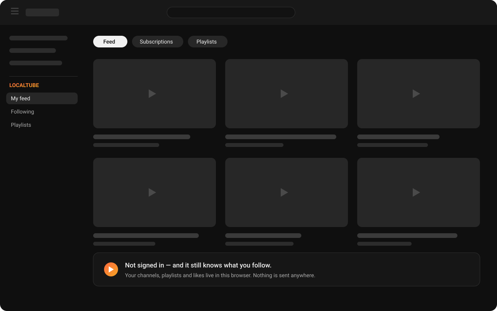

Chrome extension
LocalTube
Follow channels, get a homepage that shows only the channels you follow, save playlists and keep a Liked list — with no Google account signed in. Everything LocalTube remembers is stored in your own browser, and you can export it to a file whenever you want.
- Free, with no paid tier
- Two permissions, total
- MIT licensed

Features
The account features, without the account
Everything below works on youtube.com exactly where you'd expect it — next to YouTube's own buttons, which keep working too.
Follow channels
A Follow button on any channel or video page. The list lives in your browser, so there is nothing to sign into and nothing to lose.
A homepage you chose
YouTube's home grid, replaced by the newest uploads from your channels in plain reverse-chronological order. No recommendations, no autoplay bait.
Playlists that play
Save videos into playlists from the watch page, then play straight through them on YouTube's own player, advancing automatically.
Watch Later, Liked & History
Built in and impossible to delete by accident. A like here is a private bookmark, and the history is yours alone — kept in this browser, pausable, and clearable in one click. None of it is ever sent to YouTube.
Backup and restore
Export everything to a single JSON file and import it on another machine. Your subscriptions are yours to move, not ours to hold.
Bring your existing list
Already have hundreds of subscriptions? Drop in the
subscriptions.csv from Google Takeout and LocalTube seeds the
whole list in one go.
How it works
Public feeds, read in your browser
YouTube publishes a plain, public feed of recent uploads for every channel — the same kind of feed any RSS reader can subscribe to. LocalTube keeps a list of the channels you follow, fetches those feeds directly from youtube.com, and sorts the results by date.
That is the whole mechanism. There is no API key, no OAuth, no scraping of your account, and no CyberFenix server in the path — the requests go from your browser to YouTube and nowhere else, and they are sent without your cookies attached.
Your follows, playlists and likes are written to your browser's extension storage. Uninstalling removes them; the export file is how you keep a copy.
What LocalTube is not. A LocalTube follow or like is private to your browser. It does not touch a Google account, is not visible to the creator, does not count towards their subscriber numbers, and does not influence YouTube's recommendations. If you want any of those things, use YouTube's own buttons — they still work, right next to LocalTube's.
Questions
Before you install
Do I need to be signed out of YouTube?
No. LocalTube works either way — it simply doesn't need a sign-in. If you are signed in, YouTube's own subscriptions and LocalTube's stay completely separate.
How many videos does the feed show per channel?
YouTube's public channel feed carries the 15 most recent uploads, so that is what LocalTube can see per channel. With a normal subscription list that is far more than a day's worth of videos.
Can I get my existing subscriptions in?
Yes. Export them from takeout.google.com → YouTube and YouTube Music →
subscriptions, then import the subscriptions.csv from the LocalTube
popup. Hundreds of channels land in one step.
What happens to my data if I switch computers?
Export a backup from the popup and import it on the new machine. Chrome's own sync storage is far too small to hold a real subscription list, which is why LocalTube gives you a file instead of syncing quietly in the background.
Does it block ads or change the player?
No. LocalTube adds buttons and replaces the homepage grid. The player, the video pages and everything else are YouTube's, untouched.
Which browsers can I use it in?
Chrome and Chromium-based browsers that install from the Chrome Web Store: Edge, Brave, Opera and Vivaldi. Firefox and Safari aren't supported.
Is it affiliated with YouTube?
No. LocalTube is an independent extension and is not affiliated with, endorsed by, or connected to YouTube or Google.
Your subscriptions, on your machine
Free, open source, and two permissions wide.